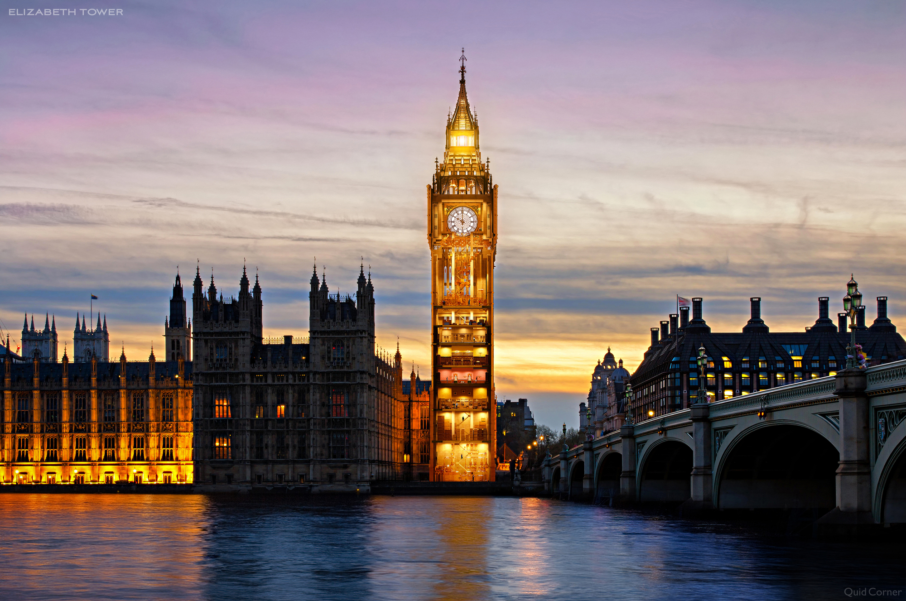
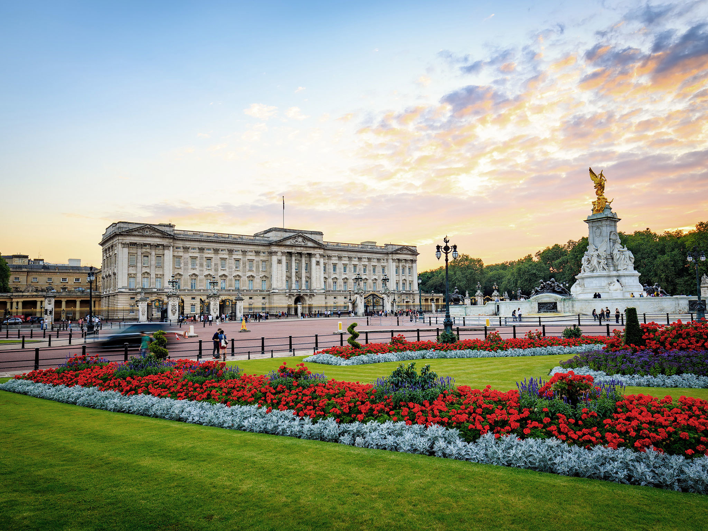

Big Ben
The iconic clock tower of London.

Buckingham Palace
Where royalty resides and tradition thrives 👑

St. Paul's Cathedral
Stunning architecture with breathtaking views.
Mind the Gap — You’re About to Explore
Explore iconic landmarks, hidden gems, and cultural delights.